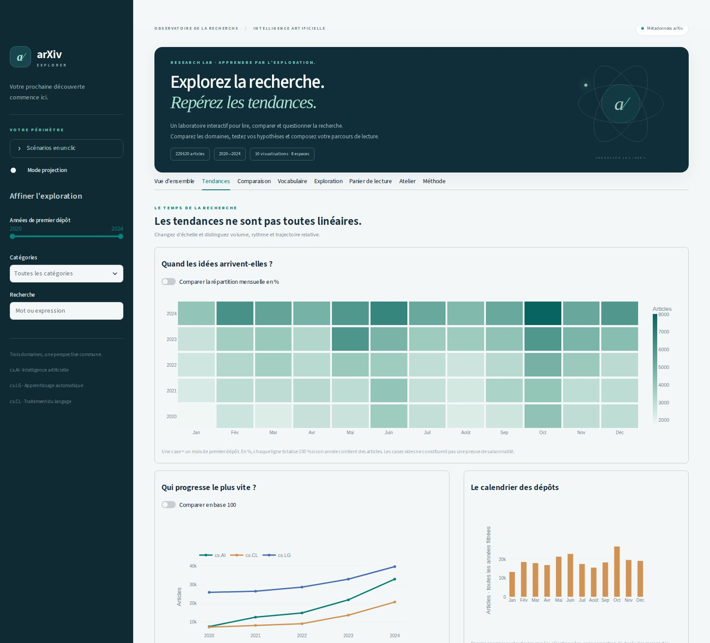
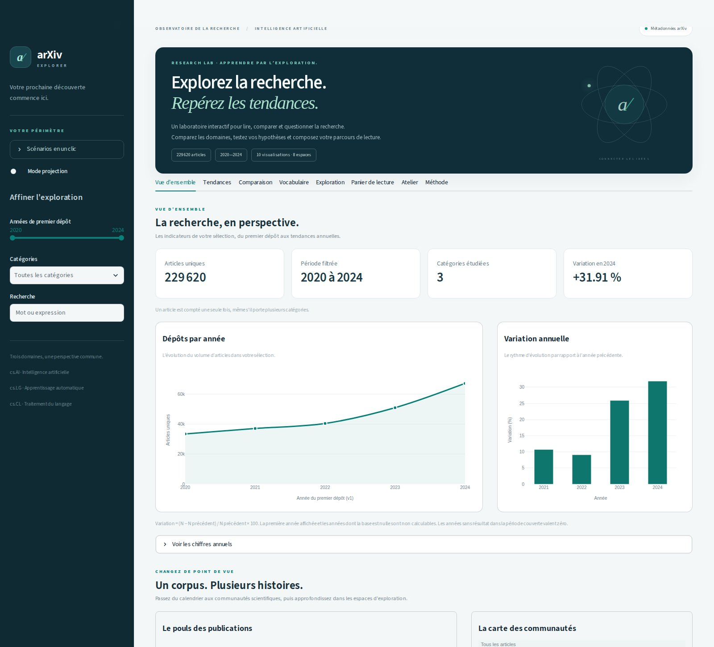
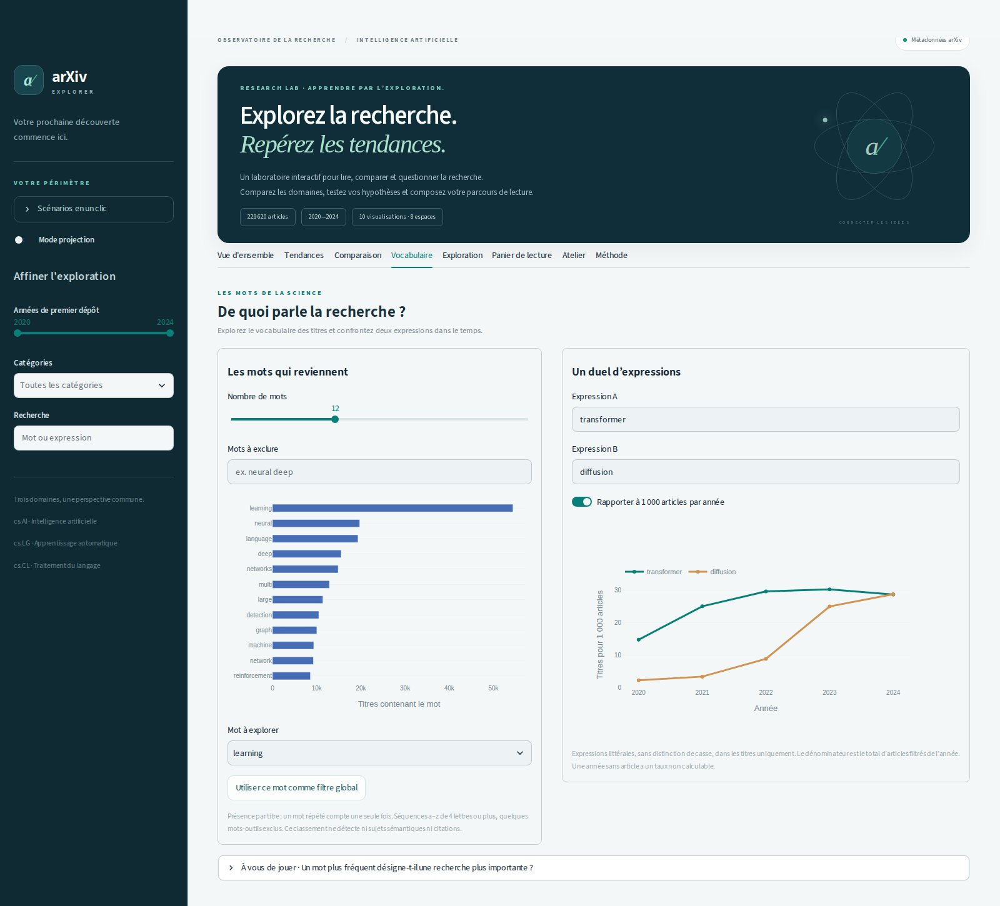

01 · TENDANCESChanger d’échelle.
Calendrier mensuel, trajectoires par domaine et comparaison en base 100.
RESEARCH LAB · APPRENDRE PAR L’EXPLORATION
Un autre regard sur la recherche en intelligence artificielle. Explorez les tendances, comparez les domaines et trouvez votre prochain article.
Vous consultez la vitrine du projet. Le dashboard complet se lance avec Python.

UN PREMIER REGARD
Sélectionnez une année pour explorer les effectifs du snapshot étudié.
articles déposés en 2024
+31,91 % par rapport à 2023Une unité = un article unique, daté par sa première version (v1). Ces chiffres ne mesurent ni la qualité scientifique, ni les citations.
PLUSIEURS POINTS DE VUE
Trois catégories qui se rencontrent : cs.AI, cs.LG et cs.CL. Cliquez sur une capture pour l’agrandir.

01 · TENDANCESCalendrier mensuel, trajectoires par domaine et comparaison en base 100.

02 · VOCABULAIREMots fréquents dans les titres et duel d’expressions, en effectifs ou en taux.
Les filtres, la recherche, les fiches et l’export décrivent une même sélection. Le panier conserve les articles repérés pendant la session.
Voir le parcours enseignant ↗À VOUS D’EXPLORER
GitHub Pages héberge cette page statique. Pour utiliser les huit espaces interactifs du dashboard, récupérez le dépôt et lancez Streamlit sur votre ordinateur.
Commencez avec les données fictives de démonstration. Le README explique ensuite comment préparer les données réelles.
Instructions complètes ↗git clone https://github.com/assiaferjani/BI-Project.git
cd BI-Project
# Créer et activer un environnement Python,
# puis installer les dépendances :
python -m pip install -r requirements.txt
# Préparer la démonstration fictive :
python -m src.prepare_data --input data/sample/arxiv_demo.jsonl --output data/processed/demo.parquet --source-version synthetic-demo-v1
# Lancer le dashboard :
python -m streamlit run app.pyLe terminal indique l’adresse locale à ouvrir dans votre navigateur.
Explorer → imaginer → construire → vérifier → présenter
Découvrir le code et les tests ↗